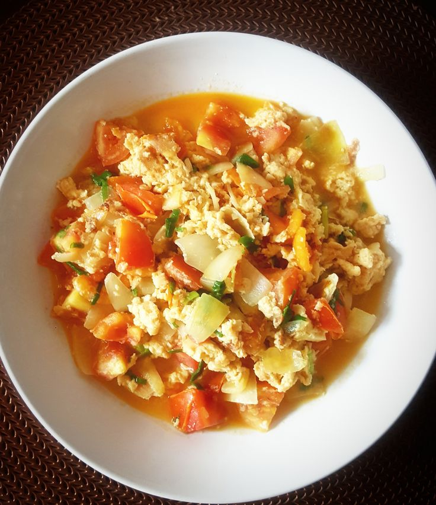

Sup Telur Tomat
Deskripsi
- Sup telur tomat adalah hidangan sup yang segar dan menghangatkan, terbuat dari kaldu yang kaya rasa dengan tambahan potongan tomat segar atau matang serta telur yang dikocok lalu dituangkan ke dalam sup panas. Biasanya, sup ini memiliki warna merah cerah dari tomat dan rasa asam-manis yang menyegarkan, dipadukan dengan tekstur lembut dari telur yang mengembang saat dituangkan ke dalam kaldu panas. Bumbu yang digunakan umumnya sederhana, seperti bawang merah, bawang putih, garam, dan merica, sehingga rasa alami dari tomat dan telur lebih menonjol. Kadang-kadang, sup telur tomat juga diberi tambahan sayuran seperti daun bawang atau seledri untuk memberikan aroma dan rasa yang lebih segar. Sup ini cocok disajikan saat cuaca dingin atau sebagai hidangan pembuka yang ringan, memiliki cita rasa yang lezat dan menyenangkan.
Bahan-bahan:
- 2 butir telur, kocok lepas
- 2 buah tomat ukuran sedang, potong dadu atau iris
- 2 siung bawang putih, cincang halus
- 1 batang daun bawang, iris serong
- 500 ml air kaldu ayam atau air biasa
- 1 sdm saus tomat (opsional, untuk rasa lebih kaya)
- 1/2 sdt minyak wijen (opsional, untuk aroma)
- Garam, gula, dan merica secukupnya
- Minyak goreng secukupnya
Langkah-langkah:
- Panaskan sedikit minyak goreng di panci. Tumis bawang putih hingga harum.
- Masukkan potongan tomat, masak hingga sedikit layu dan mengeluarkan air.
- Tuangkan air kaldu atau air biasa. Masak hingga mendidih.
- Bumbui dengan garam, gula, dan merica sesuai selera. Jika suka, tambahkan saus tomat.
- Setelah mendidih, kecilkan api. Tuang telur kocok secara perlahan sambil diaduk searah jarum jam agar membentuk serat-serat telur yang cantik.
- Masak sebentar hingga telur matang. Tambahkan minyak wijen jika menggunakan.
- Matikan api, masukkan irisan daun bawang. Aduk sebentar
- Sajikan sup telur tomat selagi hangat.